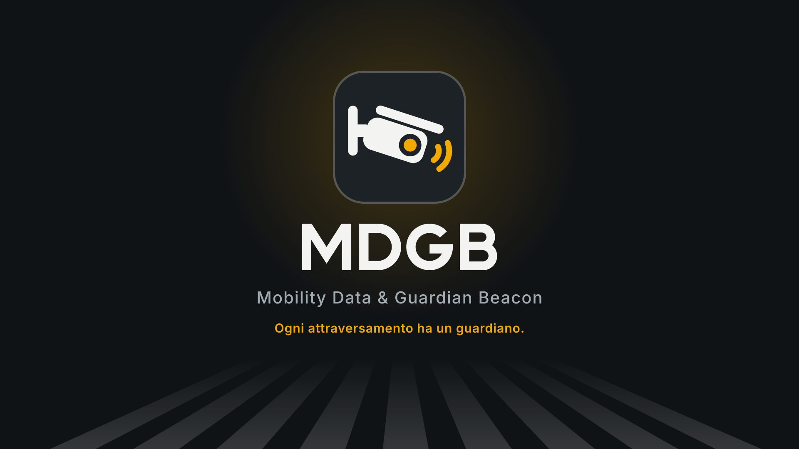
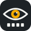
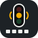

Logo MDGB: proposte
Segnaposto da usare finché non c'è un logo definitivo. La proposta principale è "strisce e faro": la M di MDGB è tagliata dalle strisce pedonali, come le vede chi arriva in auto, e il faro ambra nella sua punta veglia sull'attraversamento. Sotto: come appare dove verrà usato (pagina del tecnico, mappa della centrale, trailer) e tre alternative.
Proposta principale: strisce e faro
Con il nome
Piccolo, come icona della pagina
Deve restare leggibile come favicon e nella barra del telefono.
Sulla mappa della centrale
Uno spillo per nodo; l'anello ha i colori di stato della mappa di app/. File in mappa/.
Nel trailer
Cartello 1920×1080 in trailer/: le strisce in prospettiva, il faro che illumina il logo.

Alternative
A. Strisce e faro (proposta)
La M di MDGB tagliata dalle strisce pedonali, con il faro. Si legge anche a 16 px, funziona come spillo sulla mappa.
B. Scudo
Il guardiano come scudo, dentro l'attraversamento visto dalla camera. Più istituzionale: dice sicurezza.

C. Occhio
La visione: l'iride è la lampada ambra, sotto le strisce che guarda. Dice subito "computer vision".

D. Lanterna
Il semaforo esistente che MDGB rende intelligente. Il più letterale: chiaro, meno distintivo.
Colori
#1d2226#f3f4f1#f2a900#3fbf6a#e5483f#1f5fae